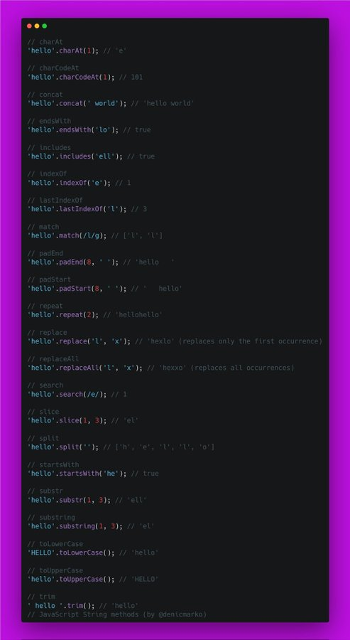
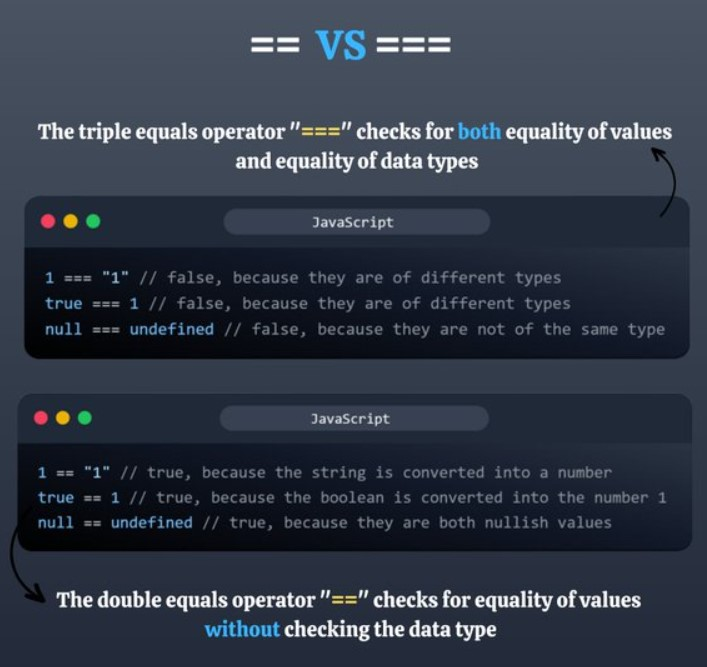

JavaScript String methods cheat sheet:
Use triple equals operator (===) when you want to check both equality of value and data types.
You can use the JavaScript Set object to combine multiple arrays.
const array1 = [1,2,3];
const array2 = [3,4,5];
const mergedSet = new Set([...array1, ...array2]);
console.log(mergedSet);
Outputs: Set(5) {1, 2, 3, 4, 5}
Question:1
function add(item ,array){
return array.push(item)
}
const result1 = add('a',['b','c'])
console.log(result1);
Answer: 3
Explanation:The push method modifies the original array by adding an element to it and returns the updated length of the array after the addition.
Question:2
async function getValue(){
return 'i love javascript'
}
const result2 = getValue();
console.log(result2);
Answer : Promise {' i love javascript'}
Explanation:Since getValue is an async function and returns a promise due to the use of the async keyword, the return value is a Promise object .
Question:3
async function getValue(){
return 'i love javascript'
}
async function getResult(){
const result = await getValue();
console.log(result);
}
getResult();
Answer: i love javascript
Explanation: If you want to retrieve the value from the Promise, you can use async/await or .then() to handle the resolved value .
Question:4
var x = 6;
var y = 3;
(x < 10 && y > 1)
Answer : true
Explanation: The code snippet declares two variables x and y, assigns them values, and then uses a boolean expression to check if both conditions (x < 10 and y > 1) are true. The expression evaluates to true because both conditions are met.
Question:5
var x = 2 + 2 - '2';
console.log(x)
Answer: 2
Explanation: The expression starts with 2 + 2, which evaluates to 4.Then, '2' is included. It's a string, but JavaScript attempts to convert it to a number for the calculation(Type Coercion). When a string starts with a numerical digit, it's successfully coerced to a numerical value (in this case, 2).The coerced numerical value 2 is then subtracted from 4, resulting in 2.The final value 2 is assigned to the variable x.Last line outputs the value stored in x to the console. Since x holds 2, the console will display 2.
Question:6
var x = "2" + "2" - "2";
console.log(x)
Answer: 20
Explanation:"2" + "2" part concatenates (joins) the string values "2" and "2". It results in the string "22", as string concatenation takes precedence over arithmetic operations in JavaScript
Since "22" is a string, and the minus sign (-) is for arithmetic operations, JavaScript attempts to convert the string to a number for the calculation2.(Type Conversion)It successfully converts "22" to the Number 22.22 - "2", Now we have a Number (22) and a String ("2"). JavaScript again attempts to convert the String "2" to a Number for the subtraction.It successfully converts "2" to the Number 2.The Number 22 is subtracted by Number 2.This results in the Number 20.The Number 20 is assigned to the variable x.Then final value of x, which is 20, is printed to the console.
Question:7
What is the output of the following code ?
console .log(typeof NaN)
A."NaN" B."string"
C."number" D."undefined"
Answer : C.number
Explanation: typeof Operator in JavaScript returns a string indicating the data type of the value it's applied to.
NaN stands for "Not a Number." It's a special numeric value representing an invalid or undefined mathematical result.
Even though NaN signifies a non-numerical value, JavaScript considers it a special type of number. The typeof operator prioritizes recognizing NaN as a number over other data types.
Question: 8
What does the NaN value represent in JavaScript ?
A."NaN" B."Not a Number"
C."number" D."undefined"
Answer : B.Not a Number
Explanation: The NaN value in JavaScript represents 'Not a Number' and is returned when a mathematical operations fails to produce a valid number .
Question:9
What is the output ?
setTimeout(() =>{
console.log(1);
},0)
queueMicrotask(() =>{
console.log(2);
})
Promise.resolve().then(()=>{
console.log(3);
})
console.log(4);
Answer : 4,2,3,1
Explanation: This code demonstrates asynchronous behavior in JavaScript using different asynchronous APIs: setTimeout, queueMicrotask, and Promise.
Here's the explanation step by step:
setTimeout(() => { console.log(1); }, 0): This sets up a timer to log 1 after 0 milliseconds. Even though it's supposed to run immediately, due to the asynchronous nature of setTimeout, it will be placed in the event queue and executed after the current synchronous code completes.
queueMicrotask(() => { console.log(2); }): This adds a microtask to the microtask queue. Microtasks are executed after the current script finishes but before the browser continues to render. So, it will log 2 after the synchronous part of the current script.
Promise.resolve().then(() => { console.log(3); }): This creates a resolved Promise and attaches a callback to it using then(). Since Promises use the microtask queue for their callbacks, it will log 3 after the microtask added by queueMicrotask().
console.log(4);: This logs 4 immediately as it's a synchronous operation.
So, the expected order of logging is: 4,3,2,1
Question:10
What is the output ?
const obj ={
x : 10,
y : 20
};
Object.freeze(obj);
const newObj = obj;
newObj.x = 50;
newObj.y = 60;
console.log(newObj.x);
console.log(newObj.y);
Answer : 10 , 20
Explanation: Object.freeze(obj) freezes the object obj. This makes the object's properties immutable, meaning they cannot be added, deleted, or modified .
(const newObj = obj) creates a new constant variable named newObj and assigns it the reference to the existing object obj. This means that both obj and newObj point to the same object in memory.
So the answer is 10 and 20